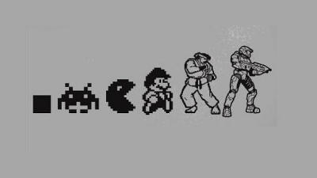
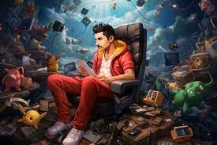

Jogos sempre foram uma parte importante da cultura humana, desde os tempos antigos até os dias de hoje. Seja para entretenimento, competição ou aprendizado, os jogos desempenham um papel significativo na vida das pessoas de todas as idades e origens.
A evolução desses jogos:
Desde os jogos de tabuleiro e jogos ao ar livre até os modernos jogos eletrônicos, os jogos evoluíram ao longo do tempo para se adaptarem aos avanços tecnológicos e às mudanças nas preferências dos jogadores. Hoje em dia, os jogos eletrônicos são uma forma popular de entretenimento, com ampla variedade de gêneros e plataformas disponíveis
Beneficios dos jogos
Além de proporcionar diversão e entretenimento, os jogos também oferecem uma série de benefícios. Eles podem melhorar habilidades cognitivas, como raciocínio lógico, resolução de problemas e tomada de decisões. Jogos que envolvem estratégia, por exemplo, podem ajudar os jogadores a desenvolver habilidades de planejamento e pensamento crítico.
Impacto social dos jogos
Os jogos também têm um impacto significativo na sociedade. Eles podem unir pessoas de diferentes origens e culturas, fornecendo uma plataforma comum para interação e comunicação. Além disso, os jogos multiplayer online permitem que os jogadores se conectem com amigos e desconhecidos ao redor do mundo, criando laços sociais e comunidades online.
O Futuro dos Jogos
O futuro dos jogos parece promissor, com avanços contínuos em tecnologias como realidade virtual (VR) e realidade aumentada (AR). Essas tecnologias oferecem novas experiências de jogo imersivas e interativas, levando os jogos a novos patamares. Além disso, o desenvolvimento de inteligência artificial (IA) está tornando os jogos mais inteligentes e adaptáveis, proporcionando experiências de jogo personalizadas e desafiadoras.
Conclusão
Em resumo, os jogos desempenham um papel importante na vida das pessoas, proporcionando diversão, desafio e oportunidades de aprendizado. Com a contínua evolução tecnológica, o futuro dos jogos é emocionante e cheio de possibilidades. Portanto, vamos continuar explorando o fascinante mundo dos jogos e desfrutando de tudo o que eles têm a oferecer.